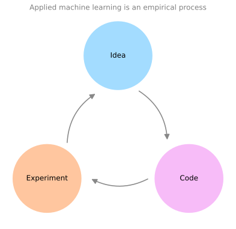
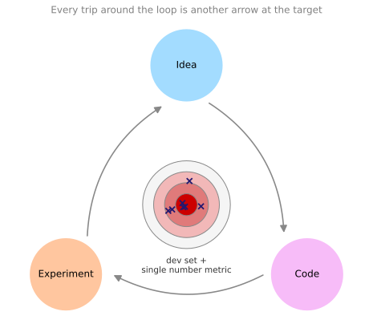
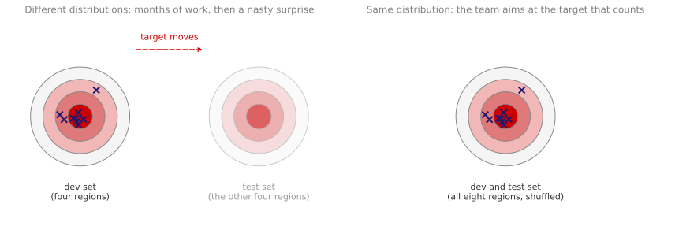

Setting Up Your Goal
deep-learning
ml-strategy
evaluation-metrics
dev-test-sets
Single number evaluation metrics, satisficing versus optimizing metrics, choosing dev and test set distributions and sizes, and when to change your target.
Before you can improve a machine learning system, you have to decide what “better” means and how you will measure it. This page covers how to define that target, how big the data behind it should be, and what to do when you discover you placed the target in the wrong spot.
Single Number Evaluation Metric
Whether you are tuning hyperparameters, trying out different ideas for learning algorithms, or just trying different options for building your system, your progress will be much faster if you have a single real number evaluation metric that lets you quickly tell whether the new thing you just tried is working better or worse than your last idea. When teams are starting on a machine learning project, setting up a single number evaluation metric for the problem is one of the first things worth doing.
Recall that applied machine learning is a highly iterative process. You have an idea, you code it up, you run the experiment to see how it did, and then you use the outcome of the experiment to refine your idea. Then you keep going around that loop as you improve your algorithm.
A single number metric is what makes each pass around the loop fast.
Precision, Recall, and the Tradeoff Between Them
Say that for your cat classifier you previously built classifier A, and by changing the hyperparameters, the training set, or something else, you have now trained a new classifier B. One reasonable way to evaluate their performance is to look at precision and recall.
The exact details do not matter too much here, and Skewed Datasets works through both measures with the confusion matrix behind them. Briefly, precision asks a question about the examples your classifier recognizes as cats. What percentage of them actually are cats? So if classifier A has 95 percent precision, then when classifier A says something is a cat, there is a 95 percent chance it really is a cat. Recall asks the reverse question. Of all the images that really are cats, what percentage were correctly recognized? If classifier A has 90 percent recall, then of all the images in your dev set that really are cats, classifier A accurately pulled out 90 percent of them.
There is often a tradeoff between precision and recall, and you care about both. You want that when the classifier says something is a cat, there is a high chance it really is a cat. But of all the images that are cats, you also want it to pull out a large fraction of them.
| Classifier | Precision | Recall |
|---|---|---|
| A | 95% | 90% |
| B | 98% | 85% |
The problem with using precision and recall as your evaluation metric is visible right there in the table. Classifier A does better on recall, and classifier B does better on precision, so you are not sure which classifier is better. And if you are trying out a lot of different ideas and a lot of different hyperparameters, you want to quickly try out not just two classifiers but maybe a dozen, and quickly pick out the best ones so you can keep iterating from there. With two evaluation metrics it is difficult to know how to quickly pick one of two, let alone one of ten.
F1 Score
Rather than using two numbers to pick a classifier, find a new evaluation metric that combines precision and recall. In the machine learning literature, the standard way to combine them is something called the F1 score. The details are not too important here, and the F1 Score section of the Advanced Learning Algorithms course derives it in full, including why the plain average would crown a useless classifier that the harmonic mean rejects. Informally, you can think of it as the average of precision \(P\) and recall \(R\). Formally it is defined as
\[ F_1 = \frac{2}{\frac{1}{P} + \frac{1}{R}} \]
In mathematics this function is called the harmonic mean of \(P\) and \(R\). Less formally, think of it as some way of averaging precision and recall, except that instead of taking the arithmetic mean you take the harmonic mean, which has some advantages in terms of trading the two off.
| Classifier | Precision | Recall | F1 score |
|---|---|---|---|
| A | 95% | 90% | 92.4% |
| B | 98% | 85% | 91.0% |
Now you can see right away that classifier A has the better F1 score. Assuming F1 is a reasonable way to combine precision and recall for your problem, you can quickly select classifier A over classifier B.
What a lot of machine learning teams find is that a well-defined dev set, which is what you measure precision and recall on, plus a single number evaluation metric, allows you to quickly tell whether classifier A or classifier B is better. Together they speed up the iterative process of improving your algorithm.
Averaging Across Categories
Here is another example. Say you are building a cat app for cat lovers in four major geographies, the US, China, India, and Other, meaning the rest of the world. Your classifiers achieve different errors on data from these four geographies. It is reasonable to keep track of how well your classifiers do in these different markets.
| Algorithm | US | China | India | Other | Average |
|---|---|---|---|---|---|
| A | 3% | 7% | 5% | 9% | 6.00% |
| B | 5% | 6% | 5% | 10% | 6.50% |
| C | 2% | 3% | 4% | 5% | 3.50% |
| D | 5% | 8% | 7% | 2% | 5.50% |
| E | 4% | 5% | 2% | 4% | 3.75% |
| F | 7% | 11% | 8% | 12% | 9.50% |
But by tracking four numbers per algorithm, it is very difficult to look at the table and quickly decide whether algorithm A or algorithm B is superior. If you are testing a lot of different classifiers, it becomes even harder to pick one. So in addition to tracking performance in the four different geographies, also compute the average. Assuming that average performance is a reasonable single real number evaluation metric, you can quickly tell that algorithm C has the lowest average error, and you might go ahead with that one if you have to pick an algorithm to keep iterating from.
Your workload in machine learning is often that you have an idea, you implement it and try it out, and you want to know whether your idea helped. Having a single number evaluation metric really improves the efficiency of you and your team in making those decisions.
Review Questions
1. Classifier A has 95 percent precision and 90 percent recall. Classifier B has 98 percent precision and 85 percent recall. Why is this pair of numbers a bad evaluation metric, and what fixes it?
TipAnswer
Neither classifier dominates the other, since A wins on recall and B wins on precision, so the pair does not rank them. With a dozen candidate classifiers the problem gets worse. The fix is to collapse the two numbers into one, and the standard choice is the F1 score, the harmonic mean of precision and recall. Here A scores 92.4 percent and B scores 91.0 percent, so A wins.
1. What does 90 percent recall mean for a cat classifier, in plain terms?
TipAnswer
Of all the images in your dev set that really are cats, the classifier correctly pulled out 90 percent of them. Recall looks at the set of true cats and asks how many you found. Precision looks at the set of images you called cats and asks how many of those were right.
1. You track error in four geographies for six algorithms. Why add an average column rather than reading the four columns directly?
TipAnswer
Because twenty-four numbers do not rank six algorithms. Scanning four columns per algorithm makes it slow and ambiguous to decide which is best, and it gets worse as you test more classifiers. Assuming the average is a reasonable summary for your application, it turns the table into one number per algorithm, and you can immediately see that algorithm C has the lowest average error at 3.5 percent.
Satisficing and Optimizing Metrics
It is not always easy to combine all the things you care about into a single number evaluation metric. In those cases it is sometimes useful to set up satisficing and optimizing metrics.
Say you have decided you care about the classification accuracy of your cat classifier. This could be the F1 score or some other measure of accuracy. But say that in addition to accuracy you also care about the running time, meaning how long it takes to classify an image.
| Classifier | Accuracy | Running time |
|---|---|---|
| A | 90% | 80 ms |
| B | 92% | 95 ms |
| C | 95% | 1,500 ms |
One thing you could do is combine accuracy and running time into an overall evaluation metric, such as
\[ \text{cost} = \text{accuracy} - 0.5 \times \text{running time} \]
But it seems a bit artificial to combine accuracy and running time with a linear weighted sum like this. Here is something else you could do instead. Choose a classifier that maximizes accuracy, subject to the running time being less than or equal to 100 milliseconds.
In this case accuracy is the optimizing metric, because you want to do as well as possible on it. Running time is the satisficing metric, meaning it just has to be good enough. It needs to be under 100 milliseconds, and beyond that you do not really care, or at least you do not care that much. It may well be the case that as long as the running time is under 100 milliseconds, your users will not notice whether it is 100 milliseconds or 50 milliseconds.
Defining optimizing and satisficing metrics gives you a clear way to pick the best classifier, which here is classifier B, because of all the ones with a running time better than 100 milliseconds, it has the best accuracy. Classifier C has the highest accuracy of all, but it takes 1.5 seconds to classify an image, so it fails the threshold and is out of the running.
More generally, if you have \(N\) metrics that you care about, it is sometimes reasonable to pick one of them to be optimizing, so you do as well as possible on that one, and the other \(N - 1\) to be satisficing. As long as they reach some threshold you do not care how much better they are beyond it, but they do have to reach it.
Wake Word Detection
Here is another example. Say you are building a system to detect wake words, also called trigger words. This refers to voice control devices such as the Amazon Echo, which wakes up when you say “Alexa”, some Google devices that wake up when you say “Okay Google”, some Apple devices that wake up when you say “Hey Siri”, and some Baidu devices that wake up when you say “Ni hao Baidu”.
You might care about the accuracy of your trigger word detection system, meaning that when someone says one of these trigger words, how likely are you to actually wake up the device. You might also care about the number of false positives, meaning that when no one actually said the trigger word, how often does it randomly wake up.
A reasonable way of combining these two is to maximize accuracy, so that when someone says one of the trigger words you maximize the chance that the device wakes up, subject to having at most one false positive every 24 hours of operation. That way the device randomly wakes up only about once per day when no one is actually talking to it. Accuracy is the optimizing metric here, and the number of false positives per 24 hours is the satisficing metric.
To summarize, if there are multiple things you care about, pick one as the optimizing metric that you want to do as well as possible on, and one or more as satisficing metrics where you are satisfied as long as they do better than some threshold. You then have an almost automatic way of quickly looking at multiple classifiers and picking the best one.
These evaluation metrics have to be calculated on a training set, a dev set, or maybe a test set, so the next thing you need to do is set those up.
Review Questions
1. What is the difference between an optimizing metric and a satisficing metric?
TipAnswer
An optimizing metric is one you want to push as far as possible, so you maximize or minimize it. A satisficing metric only has to clear a threshold, and once it does you stop caring how much better it gets. With \(N\) metrics, a common setup is one optimizing metric and \(N - 1\) satisficing ones.
1. Given the accuracy and running time table above and a 100 millisecond threshold, which classifier wins, and why is it not the most accurate one?
TipAnswer
Classifier B wins. C has the best accuracy at 95 percent, but at 1,500 milliseconds it fails the satisficing constraint entirely, so it is not eligible. Among A and B, which both run in under 100 milliseconds, B has the higher accuracy at 92 percent.
1. For a wake word system, why is “at most one false positive every 24 hours” a better formulation than folding false positives into a weighted sum with accuracy?
TipAnswer
Because it matches what users actually experience. A device that wakes up once a day unprompted is tolerable, and cutting that to once every two days buys you very little, so the extra performance is not worth trading accuracy for. A weighted sum would keep rewarding improvements past the point where anyone notices, and the weights themselves would be arbitrary.
Train, Dev, and Test Distributions
The way you set up your training, dev, and test sets can have a huge impact on how rapidly you or your team make progress. Even teams at very large companies set up these data sets in ways that slow the team down rather than speed it up. The dev set is also called the development set, or sometimes the hold-out cross validation set. The workflow is that you try a lot of ideas, train up different models on the training set, then use the dev set to evaluate the different ideas and pick one, and keep innovating to improve dev set performance until finally you have one model you are happy with, which you then evaluate on your test set.
Say you are building a cat classifier and you are operating in these eight regions: the US, the UK, other European countries, South America, India, China, other Asian countries, and Australia. How do you set up your dev set and your test set?
One thing you could do is pick four of these regions, possibly four chosen at random, and say that data from those four regions goes into the dev set, and data from the other four goes into the test set. This turns out to be a very bad idea, because your dev and test sets then come from different distributions. Instead, find a way to make your dev and test sets come from the same distribution.
Where You Place the Target
One picture to keep in mind is that setting up your dev set plus your single number evaluation metric is like placing a target and telling your team where you think the bullseye is. Once you have established that dev set and that metric, the team can innovate very quickly, try different ideas, run experiments, and use the dev set and the metric to evaluate classifiers and pick the best one. Machine learning teams are often very good at shooting arrows into targets and innovating to get closer and closer to the bullseye.

Each pass around the idea, code, experiment loop is one of those arrows. The team tries a different idea, codes it up, runs the experiment, and then reads the dev set and the metric to see how close the arrow landed. That is why the target has to be in the right place before the shooting starts.

The problem with the split on the left is that your team might spend months innovating to do well on the dev set, only to find when they finally test on the test set that data from those other four regions is very different. You get a nasty surprise, and all the months of work spent optimizing on the dev set do not give good performance on the test set. Having dev and test sets from different distributions is like setting a target, having your team spend months aiming closer and closer to the bullseye, and then announcing that the target is actually somewhere else. The team would reasonably ask why they spent months optimizing for a bullseye that you then moved.
To avoid this, take all the data, shuffle it randomly into the dev and test sets, so that both sets have data from all eight regions and both really do come from the same distribution, which is the distribution of all your data mixed together.
Story About Zip Codes
Here is a true story with some details changed. A machine learning team spent several months optimizing on a dev set made up of loan approvals for medium income zip codes. The problem was that given an input \(x\) about a loan application, predict \(y\), whether or not the applicant will repay the loan, which helps you decide whether to approve it. Zip codes are what postal codes are called in the United States.
After working on this for a few months, the team suddenly decided to test the model on data from low income zip codes. The distribution of data for medium income and low income zip codes is very different, and the classifier they had spent so much time optimizing simply did not work well on the new data. That team wasted about three months and had to go back and redo a lot of work. What happened was that they spent three months aiming for one target, and then the manager asked how they were doing on a completely different target. It was a very frustrating experience for the team.
So the recommendation for setting up a dev set and a test set is to choose them to reflect data you expect to get in the future and consider important to do well on. In particular, the dev set and the test set should come from the same distribution. Whatever type of data you expect to get in the future and want to do well on, try to get data that looks like that, and put it into both your dev set and your test set. That way you are putting the target where you actually want to hit, and the team can innovate efficiently toward that same target.
The important takeaway is that setting up the dev set together with the evaluation metric is what defines the target you are aiming at. The way you choose your training set affects how well you can actually hit that target, and that is covered separately in a later section. Some machine learning teams could have saved themselves months of work by following these guidelines.
Review Questions
1. You have data from eight regions. Why is it a bad idea to build the dev set from four of them and the test set from the other four?
TipAnswer
The dev and test sets would come from different distributions. The team optimizes hard against the dev set for months, and then the test set measures something else, so the work does not transfer. It is the equivalent of moving the target after the team has spent months learning to hit it. Shuffle all eight regions into both sets instead.
1. In the loan approval story, what exactly went wrong, and how much did it cost?
TipAnswer
The dev set was built from loan applications in medium income zip codes, and the team was later evaluated on low income zip codes. Those two distributions are very different, so the classifier tuned on the first did not work on the second. About three months of work had to be redone.
1. What is the guideline for choosing a dev set and a test set?
TipAnswer
Choose them to reflect data you expect to get in the future and consider important to do well on, and make sure both come from the same distribution. The dev set plus the evaluation metric is what defines the target, so put the target where you actually want to hit.
Size of Dev and Test Sets
The guidelines for how big the dev and test sets should be are also changing in the deep learning era. You may have heard the rule of thumb of taking all the data you have and using a 70/30 split into a train and test set, or a 60/20/20 split if you also set up a dev set. In earlier eras of machine learning this was pretty reasonable, especially when data set sizes were smaller. With a hundred, a thousand, or ten thousand examples in total, these rules of thumb are not unreasonable. The Course 2 discussion of train, dev, and test sets introduced these ratios and how they shift with data set size.
In the modern era we are used to working with much larger data sets. Say you have a million training examples. It might be quite reasonable to set up your data so that you have 98 percent in the training set, 1 percent dev, and 1 percent test. With a million examples, 1 percent is 10,000 examples, and that might be plenty for a dev set or a test set. So it is quite reasonable to use much less than 20 or 30 percent of your data for dev and test. Because deep learning algorithms have such a huge hunger for data, in problems with large data sets a much larger fraction goes into the training set.
How Big Should the Test Set Be?
The purpose of your test set is that, after you finish developing a system, it helps you evaluate how good your final system is. So the guideline is to make your test set big enough to give high confidence in the overall performance of your system. Unless you need a very accurate measure of how well your final system performs, you do not need millions and millions of examples in your test set. For many applications, 10,000 examples give enough confidence in the measured performance, and that could be much less than 30 percent of your overall data set, depending on how much data you have.
When You Might Not Need a Test Set
For some applications you may not need high confidence in the overall performance of your final system. Maybe all you need is a train set and a dev set, and not having a test set might be okay. In fact, what has sometimes happened is that people talk about using a train/test split when what they are actually doing is iterating on the test set. Rather than a test set, what they have is a train/dev split and no test set. If you are tuning to that set, it is better to call it a dev set. Not everyone in the history of machine learning has been completely rigorous about this terminology.
If all you care about is having some data to train on and some data to tune to, and you are not going to worry too much about an unbiased measure of how well the final system is doing, then it is healthier to just call it a train/dev set and acknowledge that you have no test set. This is a bit unusual, and it is definitely not the recommendation when building a system. A separate test set is reassuring, because it gives you an unbiased estimate of performance before you ship. But if you have a very large dev set, so that you do not think you will overfit it too badly, it is not totally unreasonable to have only a train/dev split, even though it is not the usual recommendation.
To summarize, in the era of big data the old rule of thumb of a 70/30 split no longer applies. The trend is to use more data for training and less for dev and test, especially when you have a very large data set. Set the dev set big enough for its purpose, which is to help you evaluate different ideas and pick between them, and set the test set big enough for its purpose, which is to evaluate your final system with confidence. That could be much less than 30 percent of the data.
Review Questions
1. You have 1,000,000 examples. Why is a 60/20/20 split wasteful, and what would you use instead?
TipAnswer
A 20 percent dev set would be 200,000 examples, far more than you need just to rank a handful of candidate models, and every example spent there is one the training set does not get. A 98/1/1 split gives 10,000 examples each for dev and test, which is typically plenty, and hands the other 980,000 to training, where deep learning algorithms actually use them.
1. What determines how big the test set should be?
TipAnswer
Its purpose, which is giving high confidence in the overall performance of the final system. That is a question about how precise your estimate needs to be, not about a fixed percentage. For many applications 10,000 examples is enough, and for a large data set that is a tiny fraction of the total.
1. A team tells you they use a train/test split and that they have been tuning their model against that test set for months. What is actually going on?
TipAnswer
They have a train/dev split with no test set. Once you tune to a set, it stops giving an unbiased estimate of performance, so it is functioning as a dev set no matter what it is called. That setup can be acceptable if you do not need an unbiased final estimate, but it is more honest to call it a dev set and acknowledge that there is no test set.
When to Change Dev and Test Sets and Metrics
Setting up a dev set and an evaluation metric is like placing a target somewhere for your team to aim at. But sometimes partway through a project you realize you put the target in the wrong place. In that case you should move it.
Metric That Ranks the Wrong Algorithm First
Say you build a cat classifier to find lots of pictures of cats to show to your cat loving users, and the metric you decided to use is classification error. Algorithms A and B have 3 percent and 5 percent error respectively, so it seems like algorithm A is doing better. But when you look at these algorithms, algorithm A for some reason is letting through a lot of pornographic images. If you ship algorithm A, users see more cat images, since it has lower error at identifying cats, but it also shows users pornographic images, which is totally unacceptable both for your company and for your users. Algorithm B has 5 percent error, so it classifies fewer images correctly, but it does not let pornographic images through.
From your company’s point of view and from a user acceptance point of view, algorithm B is a much better algorithm. So algorithm A is doing better on your evaluation metric while actually being the worse algorithm. When your evaluation metric is no longer correctly rank ordering preferences between algorithms, that is a sign that you should change the evaluation metric, or perhaps the dev set or test set.
The misclassification error metric you are using can be written as follows, where \(m_{\text{dev}}\) is the number of examples in your dev set,
\[ \text{Error} = \frac{1}{m_{\text{dev}}} \sum_{i=1}^{m_{\text{dev}}} \mathcal{I}\{\hat{y}^{(i)} \neq y^{(i)}\} \]
The indicator function \(\mathcal{I}\{\cdot\}\) equals 1 when the thing inside it is true and 0 otherwise, so this formula just counts up the number of misclassified examples and divides by how many there are.
The problem with this metric is that it treats pornographic and non-pornographic images equally, when you really do not want your classifier to mislabel a pornographic image as a cat image and show it to an unsuspecting user. One way to change the metric is to add a weight term \(w^{(i)}\),
\[ \text{Error} = \frac{1}{\sum_i w^{(i)}} \sum_{i=1}^{m_{\text{dev}}} w^{(i)} \, \mathcal{I}\{\hat{y}^{(i)} \neq y^{(i)}\} \]
where
\[ w^{(i)} = \begin{cases} 1 & \text{if } x^{(i)} \text{ is non-porn} \\ 10 & \text{if } x^{(i)} \text{ is porn} \end{cases} \]
This gives a much larger weight to pornographic examples, so the error goes up much more if the algorithm misclassifies one of them as a cat image. Here the weight is 10, and you could use a larger number such as 100. The normalization constant \(\sum_i w^{(i)}\) keeps the error between zero and one.
The details of this weighting are not important, and to actually implement it you have to go through your dev and test sets and label the pornographic images so you can evaluate the weighting function. The high level takeaway is that if you find your evaluation metric is not giving the correct rank order preference for what is actually a better algorithm, then it is time to define a new evaluation metric. The goal of the evaluation metric is to accurately tell you, given two classifiers, which one is better for your application. If you are not satisfied with your old error metric, do not keep coasting with it. Define a new one that better captures your preferences.
Placing the Target and Shooting at It Are Separate Knobs
This is an example of orthogonalization. Take the machine learning problem and break it into distinct steps. One knob is figuring out how to define a metric that captures what you want to do. A separate knob is how to actually do well on that metric. To use the target analogy, the first step is placing the target, meaning defining where you want to aim. Then as a completely separate step you worry about how to aim accurately and shoot at it.
Defining the metric is step one, and you do something else for step two. In terms of shooting at the target, your learning algorithm is optimizing some cost function of the form \(J = \frac{1}{m} \sum_{i=1}^{m} \mathcal{L}(\hat{y}^{(i)}, y^{(i)})\). One thing you could do is modify it to incorporate the same weights, changing the normalization constant as well,
\[ J = \frac{1}{\sum_i w^{(i)}} \sum_{i=1}^{m} w^{(i)} \, \mathcal{L}(\hat{y}^{(i)}, y^{(i)}) \]
Again the details of how you define \(J\) are not important. The point is that with the philosophy of orthogonalization you think of placing the target as one step, and aiming and shooting at the target as a distinct step that you handle separately. Define the metric first, and only after you have defined it, figure out how to do well on it, which might mean changing the cost function your network optimizes.
Dev Set That Does Not Look Like Production
Here is one more example. Say your two cat classifiers A and B have 3 percent and 5 percent error respectively as evaluated on your dev set, or even on your test set, which are images downloaded off the internet, so high quality well framed images. But when you deploy the product, algorithm B looks like it is performing better, even though A did better on your dev set. You have been training on very nice high quality images downloaded off the internet, but when users upload pictures through the mobile app they are much less well framed, they do not always cover only the cat, the cats have funny facial expressions, and the images are much blurrier. On that kind of data, algorithm B is actually doing better.
This is another example of your metric and dev/test sets falling down. You are evaluating on very nice high resolution well framed images, but what your users care about is doing well on the images they actually upload. So the guideline is that if doing well on your metric and your current dev and test set distribution does not correspond to doing well on the application you actually care about, then change your metric, or your dev and test sets, or both, so that your data better reflects the type of data you need to do well on.
Set Something Up Quickly, Then Refine
Having an evaluation metric and a dev set lets you much more quickly decide whether algorithm A or algorithm B is better, which really speeds up how quickly your team can iterate. So even if you cannot define the perfect evaluation metric and dev set, set something up quickly and use it to drive the speed of your team iterating. If later on you find out that it was not a good choice and you have a better idea, change it at that point. That is perfectly okay. What is not recommended is running for too long with no evaluation metric and no dev set at all, because that slows down how quickly your team can iterate and improve.
Review Questions
1. Algorithm A has 3 percent error and algorithm B has 5 percent error, but A lets pornographic images through and B does not. What does this tell you about your metric?
TipAnswer
The metric is no longer rank ordering the algorithms the way you and your users would. It says A is better while B is clearly the one you would ship. That is the signal to change the evaluation metric, or the dev and test sets, or both. Plain misclassification error treats a mislabeled pornographic image the same as any other mistake, which is not what you want.
1. Write the weighted error metric for the pornography example and explain the role of the normalization constant.
TipAnswer
\[ \text{Error} = \frac{1}{\sum_i w^{(i)}} \sum_{i=1}^{m_{\text{dev}}} w^{(i)} \, \mathcal{I}\{\hat{y}^{(i)} \neq y^{(i)}\} \]
with \(w^{(i)} = 1\) for non-pornographic examples and \(w^{(i)} = 10\) (or larger) for pornographic ones. Weighting alone would push the error above 1, so dividing by \(\sum_i w^{(i)}\) instead of by \(m_{\text{dev}}\) keeps the value between zero and one. Note that implementing this requires actually labeling the pornographic images in the dev and test sets.
1. How does changing the metric illustrate orthogonalization?
TipAnswer
It separates two questions that are easy to tangle together. Defining a metric that captures what you want is placing the target. Doing well on that metric, which might involve putting the same weights into the cost function \(J\), is aiming and shooting. They are distinct knobs, and you handle the first one completely before worrying about the second.
1. Your dev set is high quality internet photos, but users upload blurry, poorly framed pictures, and the algorithm that wins on the dev set loses in production. What do you do?
TipAnswer
Change the dev and test sets, and possibly the metric, so they reflect the blurry user-uploaded images you actually need to do well on. Doing well on the current dev set is not predictive of doing well on the application, which means the target is in the wrong place. The general guideline is that when the metric and the data you evaluate on stop corresponding to what you care about, change them.
1. You cannot yet define a perfect evaluation metric for your problem. Should you wait until you can?
TipAnswer
No. Set something up quickly and use it to drive the speed of iteration, then change it later if you find a better one. Running for a long time with no metric and no dev set is the worse failure, because the team has no fast way to tell whether any given idea helped.